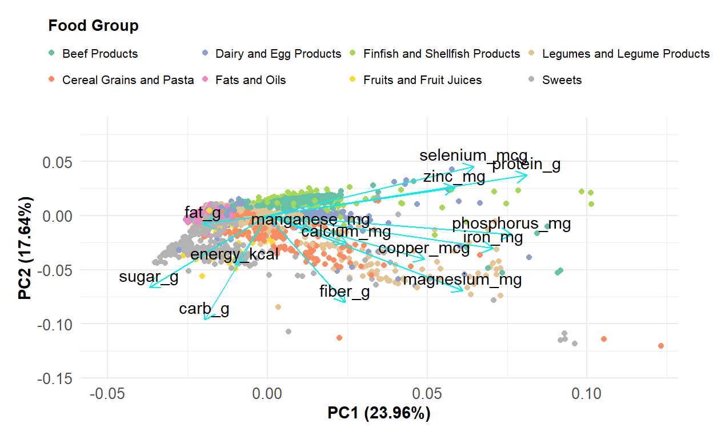
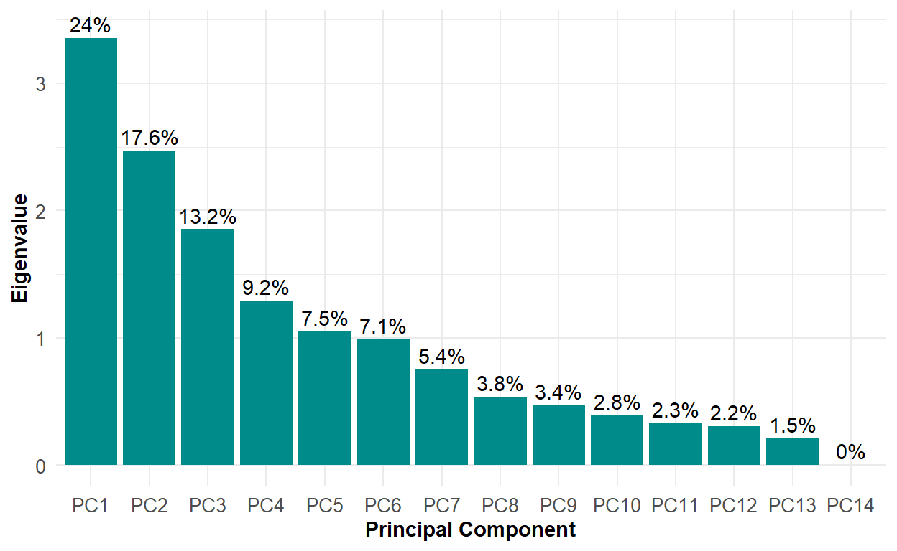
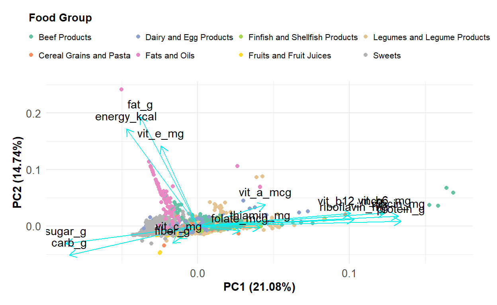
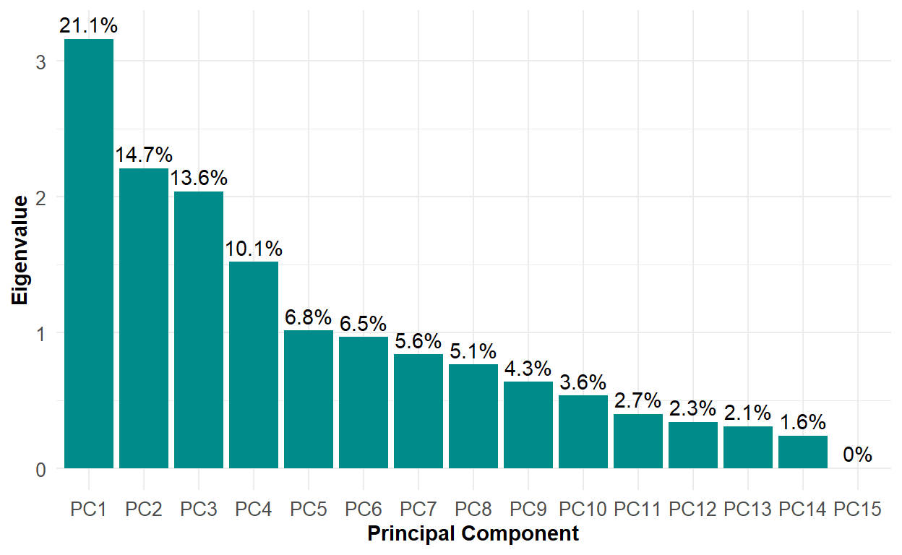

In this project, I used principal component analysis to explore macronutrient and micronutrient information for various food groups listed by the United States Department of Agriculture.
In this project, I used principal component analysis to explore macronutrient and micronutrient information for various food groups from the United States Department of Agriculture’s (USDA) National Nutrient Database or FoodData Central. Principal component analysis (PCA) was conducted on both mineral and vitamin nutrients, and their scree plots and loadings were visualized to assess the amount of variance explained.
Can we use PCA to reduce the number dimensions of the multivariate dataset in order to find clusters or groups of observations and also visually explore interesting relationships between different food groups? Using different nutrients such as minerals and vitamins, can we observe any patterns in the observations or correlations between the variables?
Different types of food contain varying levels of macronutrients (protein, fat, carbohydrates) and micronutrients (vitamins and minerals). Food groups were chosen based on their different levels of nutrients and energy (calories) (NIH NIA Know Your Food Groups, Accessed 02/18/2022) that would allow for interesting relationships and correlations between them. One of the food groups I selected was fruits and fruit juices because fruits tend to be low in calories and fat, but may be higher in vitamins, fiber, and carbohydrates. Animal products such as beef, shellfish, and dairy and egg products were chosen because they tend to be higher in calories with higher levels of protein and minerals. Legumes and grains are also high in protein, but may contain lower in calories. As for cereals and grains, they contain a high amount of calories but also high levels of minerals, vitamins, and fiber. Lastly, I chose sweets and fats because they are high in calories, but contain the lowest levels of micronutrients. For macronutrients, “carbohydrates” include unprocessed, minimally processed, and processed starches and natural sugars, whereas “sugar” refers to nutritive and nonutritive sweeteners (e.g., added granulated sugar) (USDA National Agricultural Library, Accessed 02/18/2022). The data is publicly available through the United States Department of Agriculture’s (USDA) National Nutrient Database (USDA FoodData Central, Accessed 02/14/2022).
PCA will be conducted for vitamins and minerals separately to prevent overcrowding of biplots. Data were scaled and biplots were created to visually epxlore relationships between food groups and vitamins or minerals. Scree plots were also created to visualize proportion of variance explained by each principal component. All analyses were conducted in R version 4.1.1 and RStudio version 1.4.1717.
For this PCA, I included the following variables:
energy or calories (kcal), fiber (g), sugar (g)
carbohydrate (g), protein (g), fat (g)
calcium (mg), copper (mcg), iron (mg), magnesium (mg), manganese (mg), phosphorous (g), selenium (mcg), zinc (mg)
########## Read in the data ##########
food <- read_csv(here("data", "usda_nutrients.csv")) %>%
#Convert variable names to lower case
clean_names()
########## Subset data for common minerals ##########
food_minerals <- food %>%
#Select certain nutrients: calories, macros, and minerals
select(food_group, short_descrip,
energy_kcal:fiber_g,
calcium_mg:zinc_mg) %>%
#Drop missing values
drop_na() %>%
#Filter food groups: fruits/veggies, grains/legumes, meats/dairy, fats
filter(food_group %in% c("Fruits and Fruit Juices",
"Cereal Grains and Pasta", "Legumes and Legume Products",
"Dairy and Egg Products", "Finfish and Shellfish Products",
"Beef Products", "Sweets", "Fats and Oils"))
########## PCA ##########
food_pca <- food_minerals %>%
#Remove factors or strings
select(-c(food_group,short_descrip)) %>%
#Scale numeric data
scale() %>%
#Perform PCA
prcomp
#Save loadings into dataframe
loadings_df <- data.frame(food_pca$rotation) %>%
mutate(axis = row.names(.))
#Save components into new axis
new_pts_df <- data.frame(food_pca$x)
########## Biplot ##########
#Autoplot using ggfortify
#Use ggplot
autoplot(food_pca,
#Associate df with PCA df
data = food_minerals,
#Show loadings
loadings = TRUE,
#Color by food group
#Need UK spelling
colour = "food_group",
#Show PC1 and PC2 label
loadings.label = TRUE,
#Change color of PC arrows
loadings.colour = "cyan2",
#Change color of PC labels
loadings.label.colour = "black",
#Change position of labels
loadings.label.vjust = -0.5) +
#Change legend title
labs(color = "Food Group") +
#Change color of points
scale_color_brewer(type = "qual", palette = "Set2") +
#Focus plot area on limits and allow text outside margins
coord_cartesian(xlim = c(-0.05,0.12),
ylim = c(-0.14, 0.08), clip = "off") +
#Change theme
theme_minimal() +
#Move legend title to top
guides(color = guide_legend(title.position = "top")) +
#Add custom theme
#Change legend position
theme(legend.position = "top",
#Change width of legend
legend.key.width = unit(0.02, 'cm'),
#Change text of legend
legend.text=element_text(size = 8),
#Bold and change legend title
legend.title = element_text(face = "bold", size = 10),
#Bold and change size of axes labels
axis.title = element_text(face = "bold", size = 11),
#Change size of ticks
axis.text = element_text(size = 10),
#Increase margins: theme_minimal()$plot.margin
#Top, right, bottom, left
plot.margin = unit(c(0.2, 0.8, 0.4, 0.4), "cm"))

Figure 1. Biplot of the principal component analysis for macronutrients, energy, fiber, and minerals. All variables are scaled. Arrows (cyan) indicate the loading (eigenvalues) of variables for the first two principal components (PC), such that the length represents increasing variance in the direction of the PC. The text labels (black) represent the eigenvalue labels. Points represent individual observations belonging to specific food groups (colored), which are plotted along the first two PCs. The x-axis and y-axis show the proportion of variance explained by the first and second PC, respectively. Data source: USDA FoodData Central (Accessed 02/14/2022).
From the PCA for minerals, we can observe the following patterns from the biplot (Figure 1):
Most minerals are on the positive side of the first principal component (PC), whereas calories, fat, sugar, and carbohydrates are on the negative side. This indicates that the first PC may differentiate between macronutrients and micronutrients (minerals).
Foods high in protein are on the positive side of the second PC, whereas all other nutrient variables are on the negative side. This indicates that the second PC may differentiate between foods categorized as animal or non-animal products.
Foods with higher amounts of protein tend to have lower levels of sugar and fat, but higher levels of zinc and selenium mineral, and foods with higher calories or energy tend to have higher levels of carbohydrates. Fiber is not correlated with macronutrients or minerals, but most minerals such as calcium, magnesium, and copper are positively correlated with each other
#Standard deviation vector
sd_vec <- food_pca$sdev
#Variance vector
var_vec <- sd_vec^2
#Vector of PC names
pc_names <- colnames(food_pca$rotation)
#Percent explained df
pct_expl_df <- data.frame(v = var_vec,
#Each value divided by sum of variance
pct_v = var_vec/sum(var_vec),
#Labels
pc = fct_inorder(pc_names)) %>%
mutate(pct_lbl = paste0(round(pct_v*100, 1), '%'))
#Plot
ggplot(data = pct_expl_df, aes(x = pc, y = v)) +
#Column
geom_col(fill = "cyan4") +
#Add label
geom_text(aes(label = pct_lbl),
vjust = 0, nudge_y = 0.05) +
#Change theme
theme_minimal() +
#Change x-axis and y-axis labels
labs(x = "Principal Component",
y = "Eigenvalue") +
#Add custom theme
#Bold and change size of axes labels
theme(axis.title = element_text(face = "bold", size = 11),
#Change size of ticks
axis.text = element_text(size = 10))

Figure 2. Scree plot for the principal component analysis exploring macronutrients, energy, fiber, and minerals for various food groups. The x-axis represents the specific principal component (PC) and the y-axis represents the eigenvalue. The black text above each bar in the plot represents the proportion of variance explained by that PC. Data source: USDA FoodData Central (Accessed 02/14/2022).
#Loadings or rotations of first 4 PCs
food_pca_table <- as.data.frame(food_pca$rotation[,1:4])
#Present as table
food_pca_table %>%
#Add table caption
kable(caption = "Loadings or rotations for the first four principal components (PC) for the principal component analysis for macronutrients, energy, fiber, and minerals. Data source: USDA FoodData Central (Accessed 02/14/2022).",
#Round digits
digits = 2,
#Align PCs to center
align = rep("c", times = 5),
#Change width of table
table.attr = "style='width:70%;'") %>%
#kableExtra styling
#Not make table full width, hover rows
kable_styling(bootstrap_options = "hover") %>%
#Bold row names
column_spec(1, bold = TRUE) %>%
#Highlight specific cells for high negative and positive values
#Color text white if background is hightlighted
#PC1
column_spec(2, background = case_when(food_pca_table$PC1 <= -0.25 ~ "firebrick",
food_pca_table$PC1 >= 0.30 ~ "darkgreen",
TRUE ~ " "),
color = case_when(food_pca_table$PC1 <= -0.25 ~ "white",
food_pca_table$PC1 >= 0.30 ~ "white",
TRUE ~ " ")) %>%
#PC2
column_spec(3, background = case_when(food_pca_table$PC2 <= -0.25 ~ "firebrick",
food_pca_table$PC2 >= 0.30 ~ "darkgreen",
TRUE ~ " "),
color = case_when(food_pca_table$PC2 <= -0.25 ~ "white",
food_pca_table$PC2 >= 0.30 ~ "white",
TRUE ~ " ")) %>%
#PC3
column_spec(4, background = case_when(food_pca_table$PC3 <= -0.25 ~ "firebrick",
food_pca_table$PC3 >= 0.30 ~ "darkgreen",
TRUE ~ " "),
color = case_when(food_pca_table$PC3 <= -0.25 ~ "white",
food_pca_table$PC3 >= 0.30 ~ "white",
TRUE ~ " ")) %>%
#PC4
column_spec(5, background = case_when(food_pca_table$PC4 <= -0.25 ~ "firebrick",
food_pca_table$PC4 >= 0.30 ~ "darkgreen",
TRUE ~ " "),
color = case_when(food_pca_table$PC4 <= -0.25 ~ "white",
food_pca_table$PC4 >= 0.30 ~ "white",
TRUE ~ " "))
| PC1 | PC2 | PC3 | PC4 | |
|---|---|---|---|---|
| energy_kcal | -0.05 | -0.25 | -0.65 | 0.00 |
| protein_g | 0.43 | 0.20 | -0.07 | 0.12 |
| fat_g | -0.11 | -0.04 | -0.71 | -0.08 |
| carb_g | -0.10 | -0.52 | 0.17 | 0.08 |
| sugar_g | -0.20 | -0.36 | 0.11 | 0.19 |
| fiber_g | 0.13 | -0.43 | 0.11 | -0.14 |
| calcium_mg | 0.13 | -0.13 | -0.07 | 0.65 |
| copper_mcg | 0.26 | -0.22 | 0.00 | -0.38 |
| iron_mg | 0.38 | -0.16 | 0.00 | -0.21 |
| magnesium_mg | 0.33 | -0.37 | 0.00 | -0.02 |
| manganese_mg | 0.07 | -0.08 | 0.02 | -0.35 |
| phosphorus_mg | 0.41 | -0.09 | -0.05 | 0.39 |
| selenium_mcg | 0.35 | 0.24 | -0.03 | 0.07 |
| zinc_mg | 0.31 | 0.14 | -0.06 | -0.18 |
The first two PCs of the PCA that includes minerals explain about 41.6% of the variance (Figure 2), while the first four PCs explain about 64.05% variance.
Similar to what was shown in the biplot (Figure 1), the first PC has high positive loadings (\(\ge 0.30\)) for protein and various minerals (Table 1), suggesting this PC may capture information about food groups that contain animal products such as beef and shellfish. The second PC has high negative loadings (\(\le -0.25\)) for carbohydrates, sugars, and fibers, and this could mean this PC captures information about foods that contain grains or cereals. The third PC has high negative loadings for energy and fat, which possibly represents the food group for fats and oils. The fourth PC shows high positive loadings for calcium and phosphorous but high negative loadings for copper and manganese, suggesting that foods with high calcium and phosphorous tend to be foods with lower amounts of copper and manganese.
For this PCA, I included the following variables:
energy or calories (kcal), fiber (g), sugar (g)
carbohydrate (g), protein (g), fat (g)
vitamin A (mcg), vitamin B6 (mg), vitamin B12 (mcg), vitamin C (mg), vitamin E (mg), folate (mcg), niacin (mg), riboflavin (mg), thiamin (mg)
########## Subset data for common vitamins ##########
food_vitamins <- food %>%
#Select certain nutrients: calories, macros, and vitamins
select(food_group, short_descrip, energy_kcal:fiber_g,
vit_a_mcg:thiamin_mg) %>%
#Drop missing values
drop_na() %>%
#Filter food groups: fruits/veggies, grains/legumes, meats/dairy, fats
filter(food_group %in% c("Fruits and Fruit Juices",
"Cereal Grains and Pasta", "Legumes and Legume Products",
"Dairy and Egg Products", "Finfish and Shellfish Products",
"Beef Products", "Sweets", "Fats and Oils"))
########## PCA ##########
food_pca2 <- food_vitamins %>%
#Remove factors or strings
select(-c(food_group,short_descrip)) %>%
#Scale numeric data
scale() %>%
#Perform PCA
prcomp
#Save loadings into dataframe
loadings_df2 <- data.frame(food_pca2$rotation) %>%
mutate(axis = row.names(.))
#Save components into new axis
new_pts_df2 <- data.frame(food_pca2$x)
########## Biplot ##########
#Autoplot using ggfortify
#Use ggplot
autoplot(food_pca2,
#Associate df with PCA df
data = food_vitamins,
#Show loadings
loadings = TRUE,
#Color by food group
#Need UK spelling
colour = "food_group",
#Show PC1 and PC2 label
loadings.label = TRUE,
#Change color of PC arrows
loadings.colour = "cyan2",
#Change label color
loadings.label.colour = "black",
#Change position of labels
loadings.label.vjust = -1) +
#Change legend title
labs(color = "Food Group") +
#Change color of points
scale_color_brewer(type = "qual", palette = "Set2") +
#Change theme
theme_minimal() +
#Move legend title to top
guides(color = guide_legend(title.position = "top")) +
#Add custom theme
#Change legend position
theme(legend.position = "top",
#Change width of legend
legend.key.width = unit(0.02, 'cm'),
#Change text of legend
legend.text=element_text(size = 8),
#Bold and change legend title
legend.title = element_text(face = "bold", size = 10),
#Bold and change size of axes labels
axis.title = element_text(face = "bold", size = 11),
#Change size of ticks
axis.text = element_text(size = 10),
#Increase margins: theme_minimal()$plot.margin
#Top, right, bottom, left
plot.margin = unit(c(0.2, 0.8, 0.4, 0.4), "cm"))

Figure 3. Biplot of the principal component analysis for macronutrients, energy, fiber, and vitamins. All variables are scaled. Arrows (cyan) indicate the loading (eigenvalues) of variables for the first two principal components (PC), such that the length represents increasing variance in the direction of the PC. The text labels (black) represent the eigenvalue labels. Points represent individual observations belonging to specific food groups (colored), which are plotted along the first two PCs. The x-axis and y-axis show the proportion of variance explained by the first and second PC, respectively. Data source: USDA FoodData Central (Accessed 02/14/2022).
From the PCA for vitamins, we can observe the following patterns from the biplot (Figure 3):
Most vitamins are on the positive side of the first PC, whereas sugar and carbohydrates are on the negative side. This indicates that the first PC may differentiate between sweet foods and foods with more nutrients.
Foods high in fat, vitamine E, and energy or calories are on the positive side of the second PC, whereas other macronutrients (sugar and carbohydrates) are on the negative side. This indicates that the second PC may differentiate between foods that are high in fat and oil versus other foods.
The bipolot shows three distinct groupings (foods high in fat, sugar and carbohydrates, and vitamins). Vitamins are generally all positively correlated with one another, and foods high in sugar tend to also be high in carbohydrates. Foods with high levels of fat and energy are positively correlated with foods with high levels of vitamin E. Foods high in vitamin C and fiber also tend to be positively correlated.
#Standard deviation vector
sd_vec2 <- food_pca2$sdev
#Variance vector
var_vec2 <- sd_vec2^2
#Vector of PC names
pc_names2 <- colnames(food_pca2$rotation)
#Percent explained df
pct_expl_df2 <- data.frame(v = var_vec2,
#Each value divided by sum of variance
pct_v = var_vec2/sum(var_vec2),
#Labels
pc = fct_inorder(pc_names2)) %>%
mutate(pct_lbl = paste0(round(pct_v*100, 1), '%'))
#Plot
ggplot(data = pct_expl_df2, aes(x = pc, y = v)) +
#Column
geom_col(fill = "cyan4") +
#Add label
geom_text(aes(label = pct_lbl),
vjust = 0, nudge_y = 0.05) +
#Change theme
theme_minimal() +
#Change x-axis and y-axis labels
labs(x = "Principal Component",
y = "Eigenvalue") +
#Add custom theme
#Bold and change size of axes labels
theme(axis.title = element_text(face = "bold", size = 11),
#Change size of ticks
axis.text = element_text(size = 10))

Figure 4. Scree plot for the principal component analysis exploring macronutrients, energy, fiber, and vitamins for various food groups. The x-axis represents the specific principal component (PC) and the y-axis represents the eigenvalue. The black text above each bar in the plot represents the proportion of variance explained by that PC. Data source: USDA FoodData Central (Accessed 02/14/2022).
#Loadings or rotations of first 5 PCs
food_pca2_table <- as.data.frame(food_pca2$rotation[,1:5])
#Present as table
food_pca2_table %>%
#Add table caption
kable(caption = "Loadings or rotations for the first four principal components (PC) for the principal component analysis for macronutrients, energy, fiber, and vitamins. Data source: USDA FoodData Central (Accessed 02/14/2022).",
#Round digits
digits = 2,
#Align PCs to center
align = rep("c", times = 5),
#Change width of table
table.attr = "style='width:80%;'") %>%
#kableExtra styling
#Not make table full width, hover rows
kable_styling(bootstrap_options = "hover") %>%
#Bold row names
column_spec(1, bold = TRUE) %>%
#Highlight specific cells for high negative and positive values
#Color text white if background is hightlighted
#PC1
column_spec(2, background = case_when(food_pca2_table$PC1 <= -0.25 ~ "firebrick",
food_pca2_table$PC1 >= 0.30 ~ "darkgreen",
TRUE ~ " "),
color = case_when(food_pca2_table$PC1 <= -0.25 ~ "white",
food_pca2_table$PC1 >= 0.30 ~ "white",
TRUE ~ " ")) %>%
#PC2
column_spec(3, background = case_when(food_pca2_table$PC2 <= -0.25 ~ "firebrick",
food_pca2_table$PC2 >= 0.30 ~ "darkgreen",
TRUE ~ " "),
color = case_when(food_pca2_table$PC2 <= -0.25 ~ "white",
food_pca2_table$PC2 >= 0.30 ~ "white",
TRUE ~ " ")) %>%
#PC3
column_spec(4, background = case_when(food_pca2_table$PC3 <= -0.25 ~ "firebrick",
food_pca2_table$PC3 >= 0.30 ~ "darkgreen",
TRUE ~ " "),
color = case_when(food_pca2_table$PC3 <= -0.25 ~ "white",
food_pca2_table$PC3 >= 0.30 ~ "white",
TRUE ~ " ")) %>%
#PC4
column_spec(5, background = case_when(food_pca2_table$PC4 <= -0.25 ~ "firebrick",
food_pca2_table$PC4 >= 0.30 ~ "darkgreen",
TRUE ~ " "),
color = case_when(food_pca2_table$PC4 <= -0.25 ~ "white",
food_pca2_table$PC4 >= 0.30 ~ "white",
TRUE ~ " ")) %>%
#PC5
column_spec(6, background = case_when(food_pca2_table$PC5 <= -0.25 ~ "firebrick",
food_pca2_table$PC5 >= 0.30 ~ "darkgreen",
TRUE ~ " "),
color = case_when(food_pca2_table$PC5 <= -0.25 ~ "white",
food_pca2_table$PC5 >= 0.30 ~ "white",
TRUE ~ " "))
| PC1 | PC2 | PC3 | PC4 | PC5 | |
|---|---|---|---|---|---|
| energy_kcal | -0.15 | 0.56 | 0.24 | 0.00 | -0.12 |
| protein_g | 0.43 | 0.03 | 0.02 | 0.18 | -0.15 |
| fat_g | -0.12 | 0.63 | -0.02 | 0.04 | 0.02 |
| carb_g | -0.27 | -0.17 | 0.49 | -0.14 | -0.17 |
| sugar_g | -0.28 | -0.10 | 0.25 | -0.29 | -0.39 |
| fiber_g | -0.05 | -0.10 | 0.47 | 0.16 | 0.21 |
| vit_a_mcg | 0.14 | 0.12 | 0.07 | -0.59 | 0.20 |
| vit_b6_mg | 0.40 | 0.07 | 0.12 | 0.20 | -0.13 |
| vit_b12_mcg | 0.33 | 0.07 | 0.00 | -0.51 | 0.05 |
| vit_c_mg | -0.04 | -0.07 | -0.02 | -0.05 | 0.75 |
| vit_e_mg | -0.08 | 0.46 | 0.04 | 0.07 | 0.15 |
| folate_mcg | 0.09 | -0.03 | 0.49 | 0.14 | 0.24 |
| niacin_mg | 0.43 | 0.06 | 0.13 | 0.16 | -0.14 |
| riboflavin_mg | 0.33 | 0.04 | 0.18 | -0.34 | -0.07 |
| thiamin_mg | 0.13 | -0.01 | 0.31 | 0.15 | 0.13 |
The first two PCs of the PCA that includes vitamins explain about 35.82% of the variance (Figure 4), while the first five PCs explain about 66.34% variance.
Complementing what was shown in the biplot (Figure 3), the first PC has high positive loadings (\(\ge 0.30\)) for protein and various vitamins (Table 2) but high negative loadings for sugar and carbohydrates (\(\le -0.25\)), suggesting this PC may capture information about food groups that contain animal products such as beef and shellfish. The second PC has high positive loadings for energy, fat, and vitamin E, which represents the food group for fats and oils. The third PC has high positive loadings for carbohydrates, fiber, and some vitamins, which possibly represents the food group for cereals and grains. The fourth PC shows high negative loadings for sugar and vitamins A and B12 as well as riboflavin, suggesting that foods with high additive sugars. Finally, the fifth PC has high negative loading for sugar and high positive loading for vitamin C, indicating that this PC may carry information about fruits and fruit juices which may be sweet but have high levels of vitamin C.
In conclusion, PCA allows us to reduce the high-dimensional dataset to visually explore correlations between variables and whether there are certain clusters of observations. From the PCA on minerals and vitamins on a selection of food groups, we found that:
Even after scaling, macronutrients and micronutrients can be distinguished using biplots, and food groups can be categorized into 1) high energy and high fat, 2) high sugar and high carbohydrate, or 3) high nutrient content (vitamins or minerals)
Observations that belong in similar food groups (e.g., beef products and shellfish) have similar levels of vitamins, minerals, calories, and nutrients
For both the mineral and vitamin PCA, the biplots and scree plots reveal that the first two PCs explain less than 90% of the variance in the dataset; future observations should combine both variables in the dataset and perform PCA on one, large high-dimensional dataset
National Institute of Health (NIH) National Institute on Aging (NIA). Know Your Food Groups. https://www.nia.nih.gov/health/know-your-food-groups. Content reviewed: April 29, 2019. Accessed 02/18/2022.
United States Department of Agriculture (USDA). FoodData Central. https://fdc.nal.usda.gov/download-datasets.html. Accessed 02/14/2022.
United States Department of Agriculture (USDA) Food and Nutrition Information Center. National Agricultural Library. https://www.nal.usda.gov/legacy/fnic/food-composition. Accessed 02/18/2022.
Firke, S. (2021). janitor: Simple Tools for Examining and Cleaning Dirty Data. R package version 2.1.0. https://CRAN.R-project.org/package=janitor.
Horikoshi, M. & Tang, Y. (2016). ggfortify: Data Visualization Tools for Statistical Analysis Results. https://CRAN.R-project.org/package=ggfortify.
Müller, K. (2020). here: A Simpler Way to Find Your Files. R package version 1.0.1. https://CRAN.R-project.org/package=here.
Neuwirth, E. (2014). RColorBrewer: ColorBrewer Palettes. R package version 1.1-2. https://CRAN.R-project.org/package=RColorBrewer.
Wickham et al., (2019). Welcome to the tidyverse. Journal of Open Source Software, 4(43), 1686, https://doi.org/10.21105/joss.01686.
Zhu, H. (2021). kableExtra: Construct Complex Table with ‘kable’ and Pipe Syntax. R package version 1.3.4. https://CRAN.R-project.org/package=kableExtra.
For attribution, please cite this work as
Yu (2022, Feb. 21). SY: Principal Component Analysis: USDA Food Nutrient Information. Retrieved from https://esswhy.github.io/portfolio/pca_usda_food/
BibTeX citation
@misc{yu2022principal,
author = {Yu, Shuying},
title = {SY: Principal Component Analysis: USDA Food Nutrient Information},
url = {https://esswhy.github.io/portfolio/pca_usda_food/},
year = {2022}
}